get_netlist
Contents
get_netlist#
Any component can extract its netlist dict with get_netlist
While gf.read.from_yaml converts a YAML Dict into a Component
get_netlist converts Component into a Dict
[1]:
from omegaconf import OmegaConf
import gdsfactory as gf
2022-11-07 00:10:00.159 | INFO | gdsfactory.config:<module>:45 - Load '/home/runner/work/gdsfactory/gdsfactory/gdsfactory' 5.54.0
[2]:
c = gf.components.ring_single()
c

[2]:
ring_single: uid cf327292, ports ['o2', 'o1'], references ['coupler_ring_1', 'straight_1', 'straight_2', 'bend_euler_1', 'bend_euler_2', 'straight_3'], 0 polygons
[3]:
c.plot_netlist()
[3]:
<networkx.classes.graph.Graph at 0x7f271f7717c0>

[4]:
n = c.get_netlist()
[5]:
c.write_netlist("ring.yml")
[6]:
n = OmegaConf.load("ring.yml")
[7]:
i = list(n["instances"].keys())
i
[7]:
['bend_euler_1',
'bend_euler_2',
'coupler_ring_1',
'straight_1',
'straight_2',
'straight_3']
[8]:
instance_name0 = i[0]
[9]:
n["instances"][instance_name0]["settings"]
[9]:
{'radius': 10.0}
Instance names#
By default get netlist names each instance with the name of the reference
[10]:
@gf.cell
def mzi_with_bend_automatic_naming():
c = gf.Component()
mzi = c.add_ref(gf.components.mzi())
bend = c.add_ref(gf.components.bend_euler())
bend.connect("o1", mzi.ports["o2"])
return c
c = mzi_with_bend_automatic_naming()
c.plot_netlist()
[10]:
<networkx.classes.graph.Graph at 0x7f271f78f670>
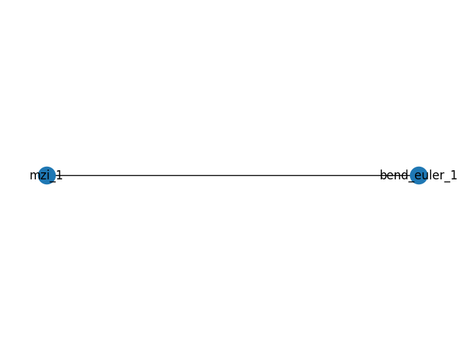
[11]:
@gf.cell
def mzi_with_bend_deterministic_names_using_alias():
c = gf.Component()
mzi = c.add_ref(gf.components.mzi(), alias="my_mzi")
bend = c.add_ref(gf.components.bend_euler(), alias="my_bend")
bend.connect("o1", mzi.ports["o2"])
return c
c = mzi_with_bend_deterministic_names_using_alias()
c.plot_netlist()
[11]:
<networkx.classes.graph.Graph at 0x7f271f6b3790>
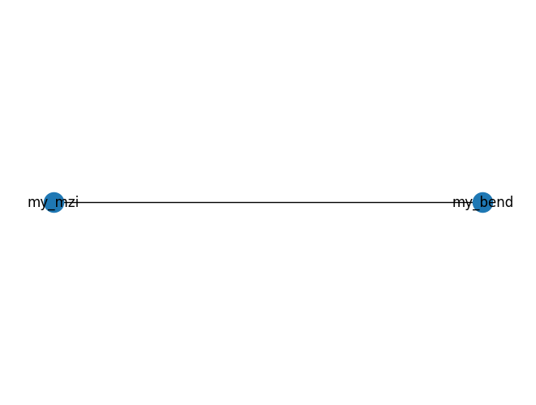
[12]:
c = gf.components.mzi()
c
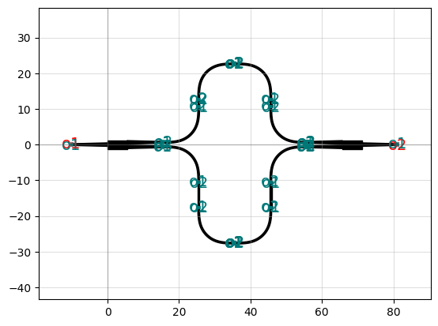
[12]:
mzi: uid ccda9762, ports ['o1', 'o2'], references ['cp1', 'cp2', 'bend_euler_1', 'syl', 'bend_euler_2', 'sxb', 'bend_euler_3', 'sytl', 'bend_euler_4', 'sxt', 'bend_euler_5', 'bend_euler_6', 'straight_5', 'straight_6', 'straight_7', 'bend_euler_7', 'bend_euler_8', 'straight_8', 'straight_9', 'straight_10'], 0 polygons
[13]:
c = gf.components.mzi()
n = c.get_netlist()
print(c.get_netlist().keys())
dict_keys(['connections', 'instances', 'placements', 'ports', 'name'])
[14]:
c.plot_netlist()
[14]:
<networkx.classes.graph.Graph at 0x7f271f4d0280>
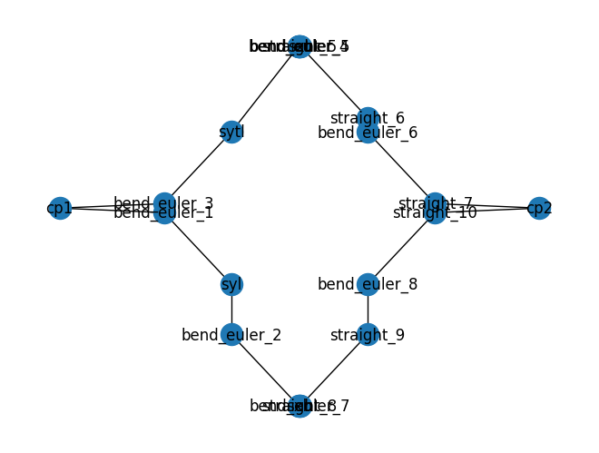
[15]:
n.keys()
[15]:
dict_keys(['connections', 'instances', 'placements', 'ports', 'name'])
warnings#
Lets make a connectivity error, for example connecting ports on the wrong layer
[16]:
@gf.cell
def mmi_with_bend():
c = gf.Component()
mmi = c.add_ref(gf.components.mmi1x2(), alias="mmi")
bend = c.add_ref(gf.components.bend_euler(layer=(2, 0)), alias="bend")
bend.connect("o1", mmi.ports["o2"])
return c
c = mmi_with_bend()
c
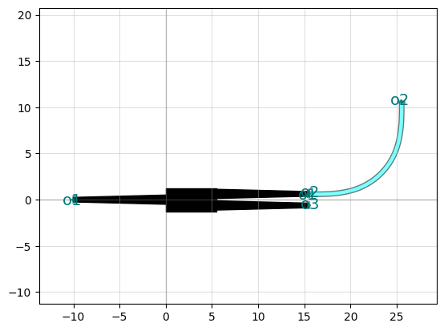
[16]:
mmi_with_bend: uid 25fbd313, ports [], references ['mmi', 'bend'], 0 polygons
[17]:
n = c.get_netlist()
[18]:
print(n["warnings"])
{'optical': {'unconnected_ports': [{'ports': ['mmi,o1', 'mmi,o3', 'bend,o2'], 'values': [[-10.0, 0.0], [15.5, -0.625], [25.5, 10.625]], 'message': '3 unconnected optical ports!'}]}}
[19]:
c.plot_netlist()
[19]:
<networkx.classes.graph.Graph at 0x7f271f50d880>
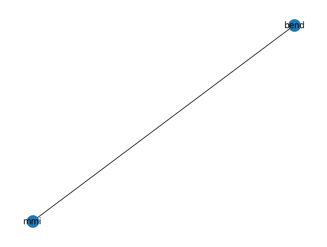
get_netlist_recursive#
When you do get_netlist() for a component it will only show connections for the instances that belong to that component. So despite havinga lot of connections, it will show only the meaningful connections for that component. For example, a ring has a ring_coupler. If you want to dig deeper, the connections that made that ring coupler are still available.
get_netlist_recursive() returns a recursive netlist.
[20]:
c = gf.components.ring_single()
c

[20]:
ring_single: uid cf327292, ports ['o2', 'o1'], references ['coupler_ring_1', 'straight_1', 'straight_2', 'bend_euler_1', 'bend_euler_2', 'straight_3'], 0 polygons
[21]:
c.plot_netlist()
[21]:
<networkx.classes.graph.Graph at 0x7f271f4b0e50>
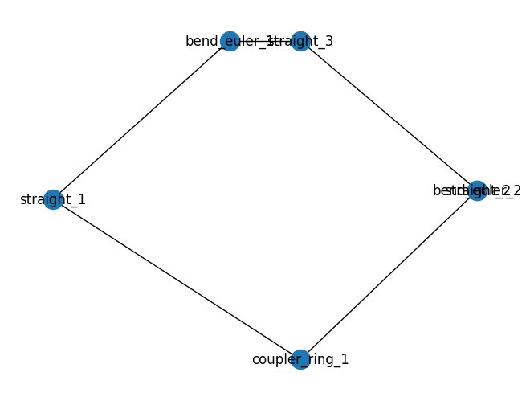
[22]:
c = gf.components.ring_double()
c
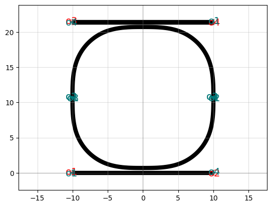
[22]:
ring_double: uid 2a8229c7, ports ['o1', 'o2', 'o3', 'o4'], references ['coupler_ring_1', 'coupler_ring_2', 'straight_1', 'straight_2'], 0 polygons
[23]:
c.plot_netlist()
[23]:
<networkx.classes.graph.Graph at 0x7f271f3423d0>
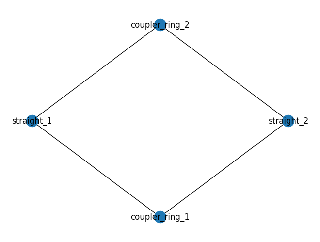
[24]:
c = gf.components.mzit()
c
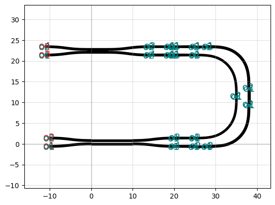
[24]:
mzit: uid 759334bb, ports ['o4', 'o3', 'o2', 'o1'], references ['coupler_1', 'taper_1', 'bend_euler_1', 'bend_euler_2', 'taper_2', 'straight_1', 'taper_3', 'taper_4', 'straight_2', 'bend_euler_3', 'bend_euler_4', 'straight_3', 'straight_4', 'taper_5', 'straight_5', 'taper_6', 'coupler_2'], 0 polygons
[25]:
c.plot_netlist()
[25]:
<networkx.classes.graph.Graph at 0x7f271f419e80>
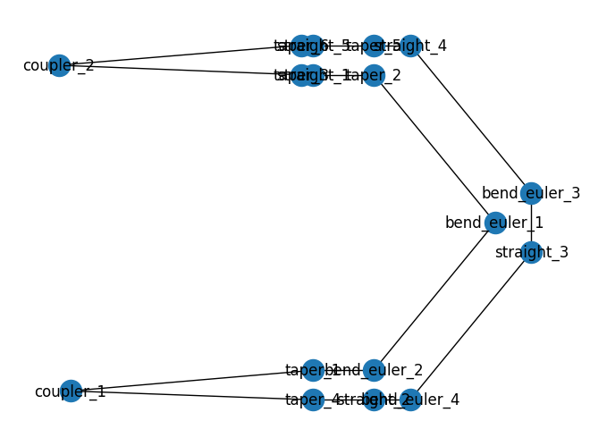
[26]:
import gdsfactory as gf
coupler_lengths = [10, 20, 30]
coupler_gaps = [0.1, 0.2, 0.3]
delta_lengths = [10, 100]
c = gf.components.mzi_lattice(
coupler_lengths=coupler_lengths,
coupler_gaps=coupler_gaps,
delta_lengths=delta_lengths,
)
c
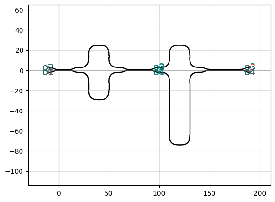
[26]:
mzi_lattice_3b4b99d8: uid a088ff19, ports ['o1', 'o2', 'o3', 'o4'], references ['mzi_1', 'mzi_2'], 0 polygons
[27]:
c.plot_netlist()
[27]:
<networkx.classes.graph.Graph at 0x7f2718af0190>
[28]:
coupler_lengths = [10, 20, 30, 40]
coupler_gaps = [0.1, 0.2, 0.4, 0.5]
delta_lengths = [10, 100, 200]
c = gf.components.mzi_lattice(
coupler_lengths=coupler_lengths,
coupler_gaps=coupler_gaps,
delta_lengths=delta_lengths,
)
c
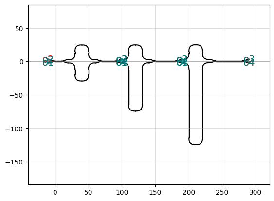
[28]:
mzi_lattice_d52c1fad: uid 589a9b60, ports ['o1', 'o2', 'o3', 'o4'], references ['mzi_1', 'mzi_2', 'mzi_3'], 0 polygons
[29]:
n = c.get_netlist()
[30]:
c.plot_netlist()
[30]:
<networkx.classes.graph.Graph at 0x7f27188a17c0>
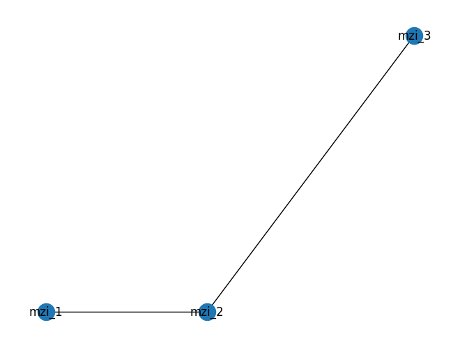
[31]:
n_recursive = c.get_netlist_recursive()
[32]:
n_recursive.keys()
[32]:
dict_keys(['mzi_lattice_d52c1fad', 'mzi_fdbe97b7', 'mzi_67d3c119', 'mzi_a3eda64d'])
[ ]: